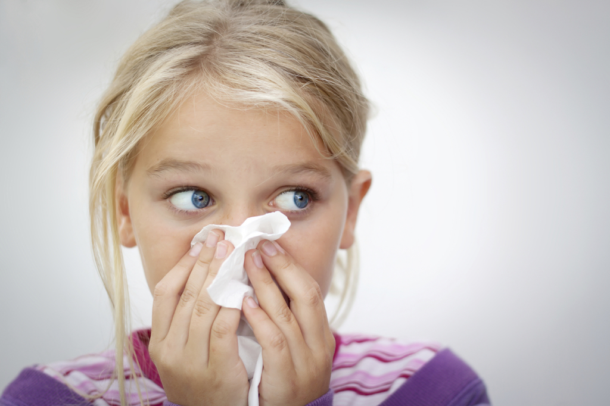

感冒、上呼吸道感染

版权声明
本文首发自微信公众号：我家育儿（ wojiayuer_com ）；无需授权即可转载，甚至无需保留以上版权声明。
与患其他疾病相比，孩子患上感冒（即上呼吸道感染）的次数会更多。在刚出生的头2年，大多数孩子都会感冒8~10次。如果孩子在幼儿园接触很多孩子，或他有哥哥姐姐也是学龄儿童，那么这个孩子患感冒的次数会更多，因为感冒在亲密接触的孩子之间非常容易传染——这是个坏消息，但也有一些好消息：大多数感冒会自行痊愈并且不会诱发任何更坏的疾病。
感冒大多由病毒引起，病毒是一种非常微小的感染性生物（个头远远小于细菌）。一个喷嚏或者咳嗽可能直接将病毒传染给另一个人。当然，病毒同样也有可能以如下方式间接传播：
- 一个感染了病毒的孩子或者成年人，在咳嗽、打喷嚏或者揉他的鼻子时，会将一些病毒转移在他的手上。
- 然后他摸到了一个健康人的手。
- 这个健康人用他刚才被污染了的手碰了自己的鼻子，将传染性的介质（病毒）放到了适合它们生长和繁殖的地方——鼻子或者咽喉。感冒的症状就显现出来了。
- 这个新近被传染的孩子或者成年人，用同样的方式将病毒再次传播到下一个易感者身上，周而复始——这个传染的循环就开始了。
一旦病毒出现并且繁殖，孩子将会出现下述症状和体征：
- 流鼻涕（刚开始是清鼻涕，接下来常常变得更为黏稠，并带有颜色）。
- 打喷嚏。
- 轻微发热（38.3~38.9度)，特别是在晚上。
- 食欲降低。
- 咽喉疼痛，并且可能吞咽困难。
- 咳嗽。
- 喜怒无常。
- 颈部出现轻微的腺体肿大。
- 扁桃体上有脓性分泌物，特别容易出现在3岁或以上的孩子身上，这表明可能有扁桃体炎。
如果孩子患有没有并发症的典型感冒，这些症状应该在7~10天后逐渐消失。
治疗
如果患有感冒，大一点的孩子一般不需要去看医生，除非病情变得更加严重。如果他只有3个月大或者更小，无论如何，在孩子出现第一个症状时就要去看儿科医生。而小一点的婴儿，症状非常具有误导性，感冒很有可能快速地发展成为更严重的疾病，例如细支气管炎、假膜性喉炎或者肺炎。如果3个月以上的孩子出现以下情况，家长就应咨询儿科医生。
- 每次呼吸的时候鼻孔张开（鼻翼扇动），每次呼吸的时候锁骨上窝或肋间肌向内凹陷（三凹征），呼吸急促或者存在任何一种呼吸困难。
- 嘴唇或者甲床青紫。
- 鼻腔内分泌的黏液10~14天后依然存在。
- 咳嗽不止（持续超过1周）。
- 耳部疼痛。
- 体温超过38.9度。
- 过度嗜睡或者脾气暴躁。
儿科医生一般需要亲自查看一下孩子，或要求你密切观察孩子，如果孩子的情况没有一天天好转，并且从患病起1周内没有完全恢复，你就需要告知儿科医生。
不幸的是，对于普通感冒，现在还没有太好的治疗方法。抗生素可以用来对抗细菌感染，但是对病毒完全没有效果，所以你能做的最大努力只能是让孩子舒服一些。确保孩子得到充足的休息，摄入足够的液体。如果孩子出现了发热或感到不舒服，给他一些单一成分的对乙酰氨基酚或布洛芬。布洛芬已经获批准用于6个月及以上的孩子，然而，千万不要把它给一个脱水或反复呕吐的孩子服用（注意严格按照根据孩子年龄的推荐剂量、间隔时间来服药）。
有一点非常重要，需要格外注意——千万不要给2岁及以下的婴幼儿喂食任何一种非处方镇咳药和感冒药，因为这些药物存在着很高的风险，可能引起致命的副作用。而且，很多临床试验表明，感冒药和镇咳药对6岁以下的孩子无效，却有可能引起非常严重的副作用。另外，咳嗽是孩子机体清除呼吸道下段黏液的一种自然机制，一般来说没有必要刻意去抑制它。
如果小婴儿由于鼻腔黏膜充血而呼吸困难或饮水困难，可以用盐水滴鼻液或喷雾来帮助他清理鼻腔，这些药物不需要处方就能购买。接下来，你可以每隔几个小时（每次哺乳前或抱孩子上床睡觉前）用一个橡胶吸鼻器帮孩子吸出鼻腔里的阻塞物。吸鼻器应该用洗涤剂来清洗，并用清水彻底冲干净。在给孩子哺乳前，每15-20分钟应该往孩子鼻子里滴2滴生理盐水滴鼻液，然后立即用吸鼻器吸出。千万不要用任何一种含有药物成分的滴鼻液，因为很有可能导致药物吸收过量。只能用普通生理盐水滴鼻液。
在使用吸鼻器的时候，首先捏住它的球部，然后慢慢轻柔地把尖端放人孩子鼻腔，接下来再慢慢松开球部。这样轻柔地吸出鼻腔内阻塞的黏液，可以让孩子在吸奶的同时畅快地呼吸。当孩子小于6个月的时候，你会发现干这种技术活儿最容易。随着孩子长大，他就会避开吸鼻器，让吸出鼻腔堵塞黏液的工作变得非常困难，但是用生理盐水滴鼻依然非常有效。
在孩子的房间里放一台空气加湿器（蒸发器）也可以帮助缓解他鼻腔里的分泌物阻塞的症状，让他感到更舒服。将机器放到离孩子近一点的地方（但要注意安全，远离他能够到的范围），这样他就可以完全享受加湿器带来的好处。一定要确保每天都彻底清洗且晾干加湿器，以防止出现细菌或真菌污染。不推荐使用蒸汽蒸发器，因为它们很容易造成严重的灼伤和烫伤。
预防
如果孩子还不满3个月，预防他感冒的最好办法就是让他远离感冒的人群。特别是在冬天，这一点非常重要，因为很多病毒都在冬天引起感冒并大规模传染。一种可以使大孩子及成年人患上轻微疾病的病毒，有可能使婴儿患上更为严重的疾病。
如果孩子在上幼儿园，而且患了感冒，教会他在咳嗽和打喷嚏的时候远离别人，而且学会在咳嗽时用一张纸巾遮住口鼻，并用纸巾来擦鼻子。这样做可以防止他将感冒传染给其他人。同样，如果孩子有可能接触感冒的人，教会他随时注意主动远离患者。同样，教会他规律地洗手，这样做可以很大程度上减少病毒的传播。
值得一提的是，咳嗽的时候用纸巾或手絹来遮住口鼻，比孩子用自己的手来遮要好得多。如果病毒到了孩子的手上，就能随着孩子的手传播到任何一个他摸过的人或物体上，如兄弟姐妹、朋友或者玩具。
分享到:

微信扫一扫
关注该公众号